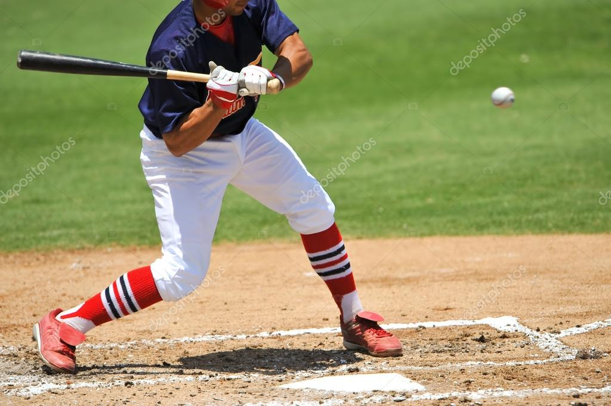

ZiPS 프로그램은 ‘과거 비슷한 기량의 선수들의 나이별 기록’을 통해 성적을 예측한다. 이 예측에는 ‘특정 연령대에 비슷한 기량을 보였던 선수들은 시간이 흐름에도 비슷한 성적을 기록한다’는 전제가 필요하다. 참고로 볼티모어 오리올스에 입단해 시범경기를 치르고 있는 김현수의 성적 예측도 좌타자이며 코너 외야수(좌익수, 우익수)인 점, 지난 7년간 리그 평균보다 볼넷 비율이 높고, 삼진 비율은 훨씬 낮다는 점에서 기인했다. 그 결과, 같은 팀에 서 9년간 활약했던 닉 마카키스(Nick Markakis)와 비슷한 유형이라고 판단한 것이다.
선수 기록에 대한 빅데이터라면 KBO 리그에도 존재한다. MLB에 비해 역사가 짧고, 팀 및 선수수가 부족하다는 점에서 MLB만큼 정확한 수치를 기대하기는 어렵겠지만 같은 전제와 비슷한 방법으로 타자의 성적 예측을 진행해보았다. 먼저, 한 시즌 100타수 이상을 소화한 타자는 KBO 리그 통산 4,342명이었다. 이 선수들의 기본 타격 기록과 BABIP(인플레이 타구 타율), 스피드 점수, 순장타율(장타율-타율)을 토대로 모든 타자를 20개의 그룹으로 분류했고, 같은 그룹 내에 있는 특정 나이대의 선수들을 파악해보았다. 그 중 예상 성적과 실제 성적이 비교적 비슷했던 경우를 소개하면 다음과 같다.
민병헌(두산)은 2009, 2010시즌에는 두산의 외야 주전-백업 사이의 역할을 하다 군복무를 마치고 돌아와 26세가 되던 2013시즌부터 두각을 드러냈다. 2013시즌 119경기에 나와 타율 0.319, 65타점을 기록했고, 2014시즌에는 124경기에 나와 타율 0.345, 12홈런, 79타점을 기록하며 리드오프의 역할을 톡톡히 해냈다. 민병헌의 과거 성적을 바탕으로 가중치를 부여해 그 나이 대에 비슷한 특성을 가졌던 선수들을 찾아본 결과, 민병헌의 과거 4년 흐름은 박용택(LG), 박재상(SK), 정근우(한화)의 동일 나이 대 성적 흐름과 비슷했다. 네 선수 모두 27세가 되는 해에 타율의 증가 폭이 컸고, 28세가 되던 해에는 다시 26세 성적과 비슷하거나 더 낮은 성적을 기록함을 알 수 있었다. 또한, 2015시즌 민병헌의 전반적인 성적도 하락할 가능성이 있다고 판단이 가능했다. 그리고 세 선수의 성적 하락폭을 바탕으로 계산한 민병헌의 2015시즌 예상 및 실제 성적을 적용해보니 다음과 같았다. 민병헌은 28세가 되는 2015시즌 예상과 마찬가지로 2014시즌보다 저조한 성적을 기록했다. 득점, 타점은 이전 성적을 어느 정도 유지한 반면 0.345에 달했던 타율이 0.303까지 떨어졌고, 삼진은 늘었으며 병살타가 많아졌다. 예상 성적 중 경기수, 득점, 안타, 3루타, 타점은 비교적 실제 성적과 근접했던 것과 달리 홈런, 볼넷, 삼진수는 큰 차이가 났다. 구체적인 항목별 성적까지는 아니더라도 선수가 나이 대별로 속한 그룹의 이동을 통해 대략적인 성적을 예측해볼 수도 있었다. 롯데 1루수 박종윤은 과거 3년(30~32세) 내내 강정길(빙그레), 김성현(삼성), 최훈재(해태•두산)과 비슷한 유형이라고 구분되어 같은 그룹에 속해 있었다. 과거의 세 선수는 33세에도 모두 같은 그룹으로 이동했다. 저조한 성적을 기록한 그룹으로의 이동이었다. 자연스레 박종윤도 해당 그룹으로 이동할 것이라고 예상했고, 2015시즌 성적을 반영해보았다.
